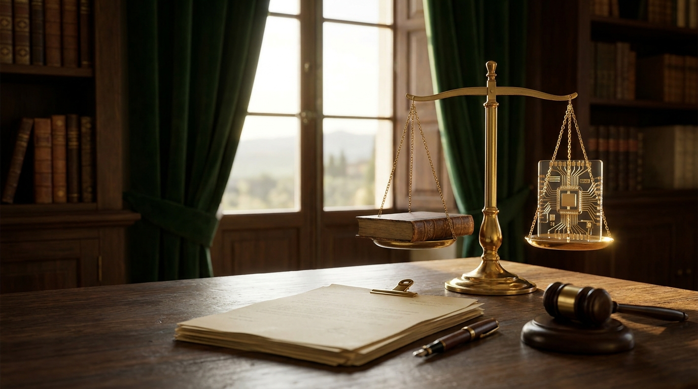

Intelligenza artificiale sul lavoro: obblighi, controlli e responsabilità
L'uso dell'intelligenza artificiale nella gestione del personale entra in una cornice di regole più stringente. Tra Regolamento UE 2024/1689, adeguamento interno tramite la legge 132/2025 e obblighi di trasparenza già vigenti, le imprese che impiegano sistemi automatizzati per selezione, monitoraggio o valutazione dei lavoratori devono rivedere processi e responsabilità. Ecco cosa cambia e perché conta.

Il fatto
Il Consiglio dei ministri ha avviato l'adeguamento dell'ordinamento interno alla disciplina europea sull'intelligenza artificiale. È utile chiarire subito un equivoco diffuso: il Regolamento (UE) 2024/1689 (cosiddetto *AI Act*) è direttamente applicabile in tutti gli Stati membri e non richiede "decreti attuativi" in senso proprio. Ciò che la normativa nazionale fa — attraverso la legge n. 132/2025 e gli schemi approvati in Consiglio dei ministri — è adeguare il diritto interno, designare le autorità competenti e coordinare il quadro sanzionatorio con quello europeo.
Sul piano del lavoro, il punto è rilevante perché molti strumenti già in uso nelle aziende rientrano nei sistemi classificati dal Regolamento come ad "alto rischio".
Inquadramento normativo
L'Allegato III, punto 4, del Reg. (UE) 2024/1689 qualifica come ad alto rischio i sistemi di IA destinati alla selezione del personale, alla valutazione dei candidati, all'assegnazione di compiti, al monitoraggio e alla valutazione delle prestazioni nel rapporto di lavoro. Per questi sistemi il Regolamento impone requisiti specifici: gestione del rischio, qualità dei dati, documentazione tecnica, trasparenza verso gli utilizzatori e sorveglianza umana (art. 14).
La legge n. 132/2025 interviene sull'ordinamento interno per allineare il quadro nazionale, individuare le autorità competenti e definire profili sanzionatori. Sulle ipotesi di nuove figure di reato e sui divieti puntuali in materia di uso "autonomo" dell'IA conviene la prudenza: il quadro è in via di definizione attraverso gli schemi approvati, e affermare oggi come certe sanzioni penali o divieti specifici sarebbe prematuro. Va verificato il testo definitivo prima di trarne conseguenze operative.
A monte resta operativo il GDPR (Reg. UE 2016/679): l'art. 22 riconosce al lavoratore il diritto a non essere sottoposto a una decisione basata unicamente sul trattamento automatizzato che produca effetti giuridici o incida in modo significativo sulla sua persona. È questo il fondamento del principio per cui una decisione su assunzione, demansionamento o licenziamento non può essere interamente delegata a una macchina.
Trasparenza e controllo a distanza
Due presidi nazionali restano centrali. Il Decreto Trasparenza (d.lgs. n. 104/2022) obbliga il datore a informare il lavoratore sull'uso di sistemi decisionali o di monitoraggio automatizzati incidenti sul rapporto di lavoro: assunzione, gestione, assegnazione di mansioni, valutazione e cessazione.
L'art. 4 dello Statuto dei lavoratori (l. n. 300/1970) disciplina invece i controlli a distanza. Un sistema di IA che raccolga dati sull'attività dei dipendenti può configurare uno strumento di controllo: in tal caso occorre l'accordo sindacale o l'autorizzazione dell'Ispettorato, salve le eccezioni di legge.
Responsabilità civile
L'introduzione dell'IA non crea un vuoto di responsabilità per il datore. Restano applicabili più basi giuridiche, da valutare caso per caso:
- l'art. 2087 c.c., che impone al datore di adottare le misure necessarie a tutelare l'integrità fisica e la personalità morale del lavoratore: un sistema automatizzato che pregiudichi salute o dignità può integrarne la violazione;
- l'art. 2049 c.c., sulla responsabilità per il fatto degli ausiliari, potenzialmente estensibile alle conseguenze dell'uso di strumenti automatizzati;
- l'art. 2050 c.c., sull'esercizio di attività pericolose, ipotizzabile per impieghi a rischio elevato.
Va inoltre presidiato il divieto di discriminazione: un algoritmo che produca effetti penalizzanti su base protetta espone alle tutele del d.lgs. n. 216/2003 e del d.lgs. n. 198/2006.
Cosa fare in concreto
- Mappare tutti i sistemi automatizzati in uso nel ciclo del personale e verificare quali rientrino nell'Allegato III del Reg. UE 2024/1689.
- Aggiornare l'informativa ex d.lgs. 104/2022, indicando logica, finalità e parametri dei sistemi decisionali o di monitoraggio.
- Verificare l'art. 4 St. lav.: dove l'IA implichi controllo a distanza, attivare accordo sindacale o autorizzazione dell'Ispettorato.
- Garantire la sorveglianza umana sulle decisioni rilevanti, evitando l'automazione integrale vietata dall'art. 22 GDPR.
- Documentare le valutazioni di rischio e conservare le evidenze: in caso di contenzioso l'onere probatorio sulla legittimità delle misure ricade sul datore.
Consigliamo di avviare la revisione dei processi senza attendere il testo definitivo degli schemi attuativi: gli obblighi di trasparenza e i presidi statutari sono già pienamente vigenti.
---
Contributo informativo a cura di Tamburro & Partners - Avv. Giuseppe Tamburro. Non costituisce parere legale.
Ogni storia di lavoro ha i suoi tempi.
Se gestisci HR e vuoi un confronto su contenzioso, ispezioni o licenziamenti, scrivi allo studio. Ti rispondiamo entro un giorno lavorativo.